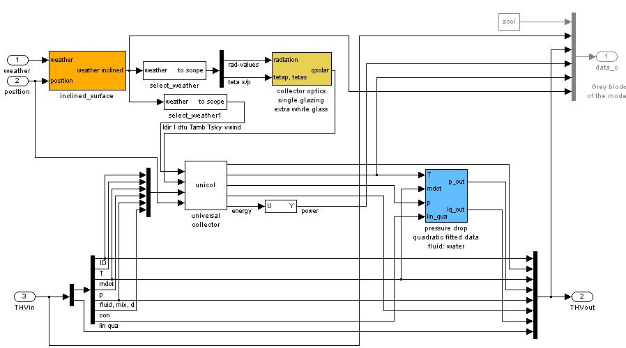
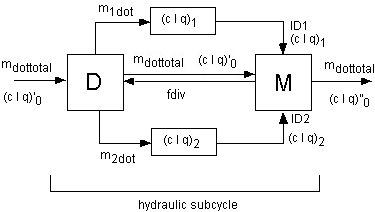

- vapourpressure
calculates the partial pressure of steam in the moist air. - saturationtemperature
calculates the dew point temperature of saturated steam at the specified pressure, i. e. it is the inverse function to vapourpressure.
The fluid_ID can be accessed via enumerations in Matlab/Simulink and C. They are defined in FluidEnum.m and carlib.h, respectively. Please consider that enumerations are of type integer, whereas in Carnot double types are used.
To output and visualise a specific physical value from the Thermo-Hydraulic- Vector special blocks have been built that automatically extract the desired physical value from the THV, e.g. displays that only output the temperature from the THV input (contained in the Blockset Outputs ).
Definition of the property types
In some functions concerning the fluid properties, for example the saturationproperty, a property for which the calculation is performed, has to be defined. This is done by specifying the property_ID according to the following table.
Property_ID |
Property |
name in PropertyEnum.m |
name in carlib.h |
|---|---|---|---|
1 |
density |
DENSITY |
DENSITY |
2 |
heat_capacity |
HEAT_CAPACITY |
HEAT_CAPACITY |
3 |
thermal_conductivity |
THERMAL_CONDUCTIVITY |
THERMAL_CONDUCTIVITY |
4 |
kinematic_viscosity |
KINEMATIC_VISCOSITY |
KINEMATIC_VISCOSITY |
5 |
enthalpy |
ENTHALPY |
ENTHALPY |
6 |
entropy |
ENTROPY |
ENTROPY |
7 |
prandtl |
PRANDTL |
PRANDTL |
8 |
specific_volume |
SPECIFIC_VOLUME |
SPECIFIC_VOLUME |
9 |
evaporation_enthalpy |
EVAPORATION_ENTHALPY |
EVAPORATION_ENTHALPY |
10 |
vapourpressure |
VAPOURPRESSURE |
VAPOURPRESSURE |
11 |
saturationtemperature |
SATURATIONTEMPERATURE |
SATURATIONTEMPERATURE |
12 |
saturationproperty |
SATURATIONPROPERTY |
SATURATIONPROPERTY |
13 |
temperature conductivity |
TEMPERATURE_CONDUCTIVITY |
TEMPERATURE_CONDUCTIVITY |
14 |
enthalpy2temperature |
ENTHALPY2TEMPERATURE |
ENTHALPY2TEMPERATURE |
15 |
grashof |
GRASHOFNUMBER |
GRASHOFNUMBER |
16 |
prandtl |
PRANDTLNUMBER |
PRANDTLNUMBER |
17 |
vapourcontent |
VAPOURCONTENT |
VAPOURCONTENT |
Moreover in the case of the saturation value of the respective property, the fluid phase has to be set as well. This is done by defining the phase_ID according to the following table.
phase_ID |
phase |
name in PhaseEnum.m |
name in carlib.h |
|---|---|---|---|
1 |
vaporous |
VAPOROUS |
VAPOROUS |
2 |
liquid |
LIQUID |
LIQUID |
3 |
solid |
SOLID |
SOLID |
The phase_ID is specified in the same way as the other IDs like the fluid type or the property_ID .
2.1.2 The Weather Data Bus
The weather data bus contains the weather conditions for
the calculation period.
It is calculated from measurements over a long period of time. Averaged data
of monthly measurements are pre-processed discretely to generate hourly values
of the relevant weather data. Correlations for the temperature, the radiation,
the relative humidity and the wind speed are used to generate the hourly values.
The weather data is specified in a certain format (see also "wformat.txt") that is created by the preprocessing of the weather data in the M-files "Wprepro" (for test reference year) and "Meteonorm2wformat" and "MeteonormMinute2wformat" (for Meteonorm data) :
Each row contains a dataset for a specific time. Column limiter
is a tabulator or a space.
Information on the dataset
station name: country:
geographical position: longitude: , latitude:
reference meridian for time (example: 0° = Greenwich Mean Time):
mark type of data collection: measured/calculated/satellite
col |
description |
units |
|---|---|---|
1 |
time |
[s] |
2 |
timevalue (comment line) format YYYYMMDDHH Y is the year, M the month, D the day, H the hour |
[-] |
3 |
zenith angle of sun (at time, not averaged) (continue at night to get time of sunrise by linear interpolation) |
[degree] |
4 |
azimuth angle of sun (0°=south, east negative), value is at timestep, no average over timestep |
[degree] |
5 |
direct beam solar radiation on a normal surface |
[W/m²] |
6 |
diffuse solar radiation on a horizontal surface |
[W/m²] |
7 |
ambient temperature |
[degree Celsius] |
8 |
radiation temperature of sky |
[degree Celsius] |
9 |
relative humidity |
[percent] |
10 |
precipitation |
[m/s] |
11 |
cloud index (0=no cloud, 1=covered sky) |
[-] |
12 |
station pressure |
[Pa] |
13 |
mean wind speed |
[m/s] |
14 |
wind direction (north=0° west=270°) |
[degree] |
15 |
incidence angle on surface (0° = vertical) |
[degree] |
|
(= -9999, if surface orientation is unknown) |
|
16 |
incidence angle in plane of vertical and main surface axis (the main axis is parallel to the main flow direction in a collector) |
[degree] |
17 |
incidence angle in plane of vertical and second surface axis (the second axis is in the surface and a vertical on the main flow direction in a collector) |
[degree] |
18 |
direct solar radiation on surface |
[W/m²] |
19 |
diffuse solar radiation on surface |
[W/m²] |
|
|
|
|
UNKNOWN: set -9999 for unknown values |
External Data, particularly the weather data in the CARNOT Library , are stored in ASCII-datafiles.
Load them to MATLAB Workspace with
load <filename>.dat
where <filename is the name of the external datafile, in
the MATLAB command window.
Use in Simulink with the "from Workspace" block (if previously load
in MATLAB Workspace) or the "from File" block.
NOTE: Physical units in CARNOT are conform to SI, the international standard. (One small difference is the temperature, which is given in degree Celsius and not in Kelvin.)
IMPORTANT NOTE:
The format of the weather data vector and weather data file have been recently changed. The compatibility with the old format is still maintain but will be remained in the future. Use the block select_weather in place of the Simulink block "Selector" in your models and blocks if you want to maintain compatibility or use old weather data vectors and files.
To convert your old data weather files, use convert_weather .
2.1.3 The Fuel vector
The fuel block is a collection of constants characterising the different types of fuel.
The fuel vector includes the characteristics of a fuel like stoichiometric air demand, heat with and without condensation, condensation temperature, costs , etc.
Definition of the Fuel-vector
No. |
description |
abbreviation |
physical unit |
remark |
|---|---|---|---|---|
1 |
identifier fuel |
ID |
none |
|
2 |
temperature |
T |
[°C] |
|
3 |
stoichiometric air demand |
ls |
[kg air/kg fuel] |
|
4 |
pressure |
p |
[Pa] |
|
5 |
heat without condensation |
hl |
[J/kg] |
|
6 |
heat with condensation |
hh |
[J/kg] |
|
7 |
condensation temperature |
Tc |
[°C] |
|
8 |
price per kg |
price |
[1/kg] |
|
9 |
massfraction H |
mH |
[kg H/kg fuel] |
|
10 |
massfraction C |
mC |
[kg C/kg fuel] |
|
11 |
massfraction O |
mO |
[kg O/kg fuel] |
|
12 |
massfraction S |
mS |
[kg S/kg fuel] |
|
13 |
massfraction N |
mN |
[kg N/kg fuel] |
|
14 |
massfraction H 2 O |
mH 2 O |
[kg O/kg fuel] |
|
15 |
not used |
|||
16 |
not used |
Fuel ID |
description |
|---|---|
0 |
no calculation |
1 |
gaseous |
2 |
liquid |
3 |
solid |
You may use the Fuel_CONF block which gives a choice of pre-defined fuels.
2.1.4 The Eco vector
The Eco (economy-ecology) vector defines the output of a fuel consuming system component like massflow of fuel , thermal power, electric power, exhaust gas etc.. As well the fuel costs are considered. Thus the Eco-vector is used for economic and ecologically bilancing of combustion systems.
Definition of the Eco-vector
No. |
description |
abbreviation |
physical unit |
remark |
|---|---|---|---|---|
1 |
identifier of fuel | fuel-ID |
[-] |
|
2 |
temperature | T |
[°C] |
|
3 |
massflow rate | m dot |
[kg/s] |
|
4 |
pressure | p |
[Pa] |
|
5 |
thermal power | Qdot |
[W] |
|
6 |
electric power | Pel |
[W] |
|
7 |
flow of money | flowmoney |
[1/s] |
|
8 |
massflow H 2 O | m dot H 2 O |
[kg/s] |
|
9 |
massflow CO 2 | m dot CO 2 |
[kg/s] |
|
10 |
massflow O 2 | m dot O 2 |
[kg/s] |
|
11 |
massflow SO 2 | m dot SO 2 |
[kg/s] |
|
12 |
massflow N 2 | m dot N 2 |
[kg/s] |
|
13 |
massflow NO x | m dot NO x |
[kg/s] |
|
14 |
massflow CO | m dot CO |
[kg/s] |
|
15 |
massflow C x H y | m dot C x H y |
[kg/s] |
|
16 |
free for further extensions | |||
17 |
free for further extensions | |||
18 |
free for further extensions | |||
19 |
free for further extensions |
2.1.5 Building-Vectors
In the Building model two further vectors are used.
The S-vector describes the energy flows in the buidling, e.g. the solar gain through the windows.
The incoming energy flows are defined in the S-vector
No. |
used for |
unit |
comment |
|---|---|---|---|
1 |
incoming solar power |
[W] |
used to display the energy balance |
2 |
power input by equipment, i.e. computers |
[W] |
used to display the energy balance |
3 |
power input by light sources |
[W] |
used to display the energy balance |
4 |
power input by persons |
[W] |
used to display the energy balance |
5 |
power input by heating, id. radiator |
[W] |
used to display the energy balance |
6 |
power input by ventilation |
[W] |
used to display the energy balance |
7 |
convective power from walls |
[W] |
used in the room node for the energy balance |
8 |
radiative power from walls |
[W] |
used in the room node for the energy balance |
9 |
massflow of air |
[kg/s] |
used in the room node for the energy balance |
10 |
massflow of water(part of moist air) |
[kg/s] |
used in the room node for the energy and water balance |
11 |
massflow of CO 2 |
[kg/s] |
used in the room node for the CO 2 balance |
12 |
flowrate of air from outside into the room |
[m 3 /s] |
used in the room node for the energy balance |
13 |
flowrate of air from the room to the outside |
[m 3 /s] |
used in the room node for the energy balance |
The outputs of the room_node have to be connected carefully to the walls and other components of the room-zone.
The AIV (Air-Infiltration-vector) is the connection of a room-node
to the floor, the ceiling, the walls and the windows.
It contains all the necessary information about the actual air conditions in
the room.
The AIV-Vector (Air-Infiltration-Ventilation) is connected to walls, floor, ceiling, ventilation and radiator. Q dotsol solar power input has to be connected to the floor V air volume of room has to be connected to the ventilation block No. used for unit 1 sensitive room temperature [°C] 2 convective room temperature [°C] 3 radiative room temperature [°C] 4 mass of water per mass of air [kg/kg] 5 mass of CO 2 per mass of air [kg/kg] 6 density of air in the room [kg/m 3 ] 7 heat capacity of air in the room [J/kgK] 8 air pressure in the room [Pa] 9 air exchange rate (flow rate per room-volume) [l/h](no SI-unit) To enhance the possibility of adapting one block for different
types of the respective component, a kind of variable block has been introduced
in the subsystem. A sublibrary of blocks has been created from which a suitable
block can be chosen and copied into the subsystem in place of the actual block.
An example is the flat plate collector. If you choose the
"Look under Mask"
command from the Edit menu ,
the subsystem pops up and you see three coloured blocks, one called inclined
surface, one for the calculation of the incidence
angle modifier (IAM) and one for the pressure drop
calculation of the collector. These blocks can be exchanged with blocks from the sublibraries
of the respective block. The incidence angle modifier can be specified for four
different kind of collector coverings, and a fifth is provided for modelling
the optical properties of a parabolic trough and another one for modelling a
tube collector , so you have a different type of collector. For the pressure
drop calculation there are three kinds of calculation methods available.  Another example of this method of modifying block properties
from the subsystem is in the blockset storage where the surface model has to
be chosen and the storage itself can be modified with different supplementary
components, the so-called port blocs. Some material property functions of the Carlib Library can be used in Simulink and
be called directly from the workspace as well, namely the functions
Some functions are helpfull if you want do analyze fluid properties: enthalpy2temperature
The function call is carried out like any other function call
of MATLAB m-files by typing the function name and the variables. In the case
of the material properties, these variables are:
The fluid_ID is the same as used in the CARNOT library. The
variables are specified as follows: density(temperature,
pressure, fluid_id, fluid_mix) For example to find the density of pure water at 1e5 Pascal
and 20°C, type: density(20, 1e5,1,0) To get the saturationproperties of the respective property function, you have to call the function
fluidprop. In this case the function call contains five parameters, namely
If you call fluidprop with a positive property type, the function
will return the same value as the direct call with the function name of the
other utility function, e.g. the calls density(temp,
pres, fluid_id, fluid_mix) and fluidprop(temp,
pres, fluid_id, fluid_mix, property_type = 1) lead to the same value of the density. To learn more about
the property type consult the description of the THB in the paragraph 2.1.1.. If you call fluidprop with a negative
property the function returns the saturationproperty of the respective property in vectorial form. The first component
is the value for saturated steam at the specified conditions, the second value
the one of boiling fluid. So to get the saturationproperty the function call
of fluidprop has to be effectuated in the following way: fluidprop(temp,
pres, fluid_id, fluid_mix, property_type = -1) density(20,1e5,1,0) To get more information about the material property functions
you can type help
<functionname> in the workspace, as with any other MATLAB function. Another way to get the saturation values of the respective
property is to call the m-file and to specify the pressure as vapourpressure
at the respective temperature density(temp,vapourpressure(temp,pres,id,mix),fluid_id,fluid_mix) If you call the function with the fluid_mix = 0, All material functions are vectorised, they can be specified
with more than one fluid property, i.e. with a vector of temperatures. In this
case either all input vectors must be of the same length or they must be a scalar.
A scalar is interpreted as a vector, which contains the adequate number of components
of the specified value. Validation:
reynolds
Some more utility functions are provided to handle calculations.
They are:
function purpose airmass
Calculate the airmass for a given season and geographical location. annualcosts Calculate the annual costs of an
investment including operation costs. BlockIsInCarnotLibrary Function call is true when the
block is still in the Carnot library and false when it is placed in a
model. Can be used in masked blocks (see _CONF blocks). calculate_validation_error Used by validation scripts to
calculate the error.
Carnot_Callbacks Callback function for the block. The C-MEX function checkhgt (check
height) is used to run through a closed cycle in a SIMULINK model
and check, if all height parameters are set correctly and the cycle
is in balance cloudindex Calculate the cloud index. Calculates the pressure-drop in a
collector per collector surface.
convert_weather Convert_weather converts old weather Carnot-Format data
file into the new Carnot-Format. Calculates the seconds that have
passed since the 1st January at midnight, from a date vector which
contains the values [month day hour minute second]. This function
is quite useful to determine the simulation parameters, if a simulation
is to start on a specified date dir2 Similar to "dir" command, but searches also in
subfolders (function from Mathworks file download section on the
homepage). display_verification_error Show the result of the verfification process. The C-MEX function interface to
make the fluid properties of the Carlib
Library accessible from the MATLAB
command window
helpcarnot Open the Carnot manual in the help-browser. hourangle2time Convert a solar hour angle to legal time. Function to determine parameters
of a heat pump. init_carnot Initialize the Carnot pathes. init_carnot_savepath Initialize the Carnot pathes and save the changes to the Matlab
path. Calculates legal time of a location
on the base of the solar time. open all systems in a directory and
save without library links.
Meteonorm2wformat Convert Metenorm data to Carnot weather data files. MeteonormMinute2wformat Convert Metenorm data to Carnot weather data files.
path_carnot Function to locate different files in the Carnot
library.
radiationdivision Calculate direct and diffuse radiation from the global
radiation. Plots a graph to see the ratio of
direct radiation on tilted surface to that on horizontal surface
depending on slope and surface azimuth angle Calculates it the other way round,
so it calculates the absolute humidity from the inputs: relative
humidity of the moist air, pressure and temperature. repeat_timeseries Repeat a timeseries, can be used to duplicate annual
weather data files if you want to simulate several years. Calculates the other way round. If
you enter a value of seconds you get the date that corresponds to
the number of seconds which have passed since the 1st January at
midnight. skytemperature Radiation temperature of the sky. calculates the declination of the
sun in degree Calculates the solar extraterrestrial
radiation on a normal plane in W/m² Calculates solar time on the base
of the legal time. In the solar time the sun is always in the south
(Azimuth 0°) at 12:00. sumtime Calculates the time in seconds between 1st of January
and a given date. Calculates declination, altitude,
zenith and azimuth of sun and the hourangle. Plots a position diagram of the sun. sunset Calculate the time of sunrise and sunset for a given
day. Calculate the transmission-absorption
product for glazing, i.e. for flat plate collectors.
template_verify_Function Template for the verify_* function (see
tutorial/templates folder)
time2hourangle Calculate the solar hour angle for a given time.
timecomment Creates a time comment vector for the weather data
files. tmy2wformat Convert a typical meteorolocical year (TMY format) to
Carnot weather data format.
try2wformat Convert DWD test reference years to Carnot weather data
format. tvalue Convert a time to the Weather Data time comment (see
also wformat) txt2mat txt2mat read an ascii file and
convert a data table to matrix (The function is from the Mathworks
download section).
unitconv_carnot Conversion of phyical units.
unitconv_temperature Conversion of phyical units
(temperature). velocity Calulate the velocity in a pipe or
duct.
verification_carnot Main function to verify the whole
library and its functions. All verify_*.m functions are called. wformat m-file with the definition of the
weather data bus Calculates the relative humidity
from the inputs: absolute humidity of the moist air, pressure and
temperature. Calculates the average of a given
weather data matrix for a specified time interval Calculates the sum and average of
a given weather data matrix for a specified time interval. To get more information about the functions you can type help
<functionname> in the command window. The pressure drop is described by a quadratic function of
the mass flow rate with the equation d p = con + lin * mdot + qua * mdot^2
(Eq 2.1) where con is a constant term
(in Pa), lin in Pa/(kg/s) the coefficient of the linear
and qua in
Pa/(kg/s)^2 the coefficient of the quadratic term. If these three coefficients and
the actual mass flow rate are known, the pressure drop can be calculated for a
whole circuit.
Calculations without pressure drop Pumps and components with pressure
drops in a cycle d p_pump = a0 + a1*mdot + a2*mdot^2
(Eq. 2.2) For any closed hydraulic cylce the
pressure head created by the pump must be equal to the pressure drop of the
cycle. Combining Eq. 2.1 and Eq. 2.2 gives a quadratic equation which can be
solved analytically: d p_pump = dp a0 + a1*mdot +
a2*mdot^2 = con + lin*mdot + qua*mdot^2 (con-a0) + (lin-a1)*mdot + (qua-a2)*mdot^2
= 0 Carnot uses the function
solve_quadratic_equation in the Carlib function library. This function avoids
the catastrophic cancellation by taking only the root further away from zero in
x1 = (-b +/- sqrt(b^2-4ac))/(2a) and calculating the other root is by x2 =
c/a/x1. Cycles
with influence of static height Pressure drop for components in
series p p_series = dp_1 + dp_2
(Eq. 2.3) dp_series = con1 + lin1 * mdot + qua1 * mdot^2
+ con2 + lin2 * mdot + qua2 * mdot^2 d p_series
= (con1+con2) + (lin1+lin2) * mdot + (qua1+qua2) * mdot^2 To enable the hydraulic calculation of arbitrary models, every
block performs the calculation of the three pressure drop coefficients [con lin
qua] that are added to the incoming coefficients during the calculation. In this
way the pressure drop can be calculated for every system that you specify by
means of the coefficients even prior to the simulation, if the coefficients
are known. Pressure drop for components in
parallel (hydraulic subcylces)
The S vector may be used to visualize to energy flows (see S_Selector in CARNOT/outputs):
2.2 Specifying Components
in the Subsystem

Figure 2.1:Open subset of the incidence Angle Modifier
Figure 2.2: Specifying components by changing blocks in the subsystem 2.3 Utility Functions
2.3.1 Material property
functions
the saturation value of the boiling fluid,
if you call it with the fluid_mix =1,
the value of saturated steam is returned.
In case of a fluid_mix between 0 and 1, the fluid is in the two phase region,
i.e. a mixture of boiling fluid and saturated steam.
2.3.3 Characteristic Numbers
2.3.3 Other utility functions
angles2time
checkhgt
2.4 Concepts for the Models
2.4.1 Pressure Drop
and Massflow Calculations
The use of the coefficients to describe the pressure drop
has great advantages concerning the calculation time. If the coefficients
are known, an iteration is no longer needed, since the pressure drop can be
calculated analytically. Thus
a whole cycle and even branches (subcycles, see below) can be calculated without iteration, so that the necessary
amount calculation is reduced significantly.
If you are not interested in the
pressure drop calclulation because you know the mass flow in the system or you
assume that the cycle and the pump will be correctely dimensioned later, you can
use a pump creating a constant massflow rate (Pump_Constant
or Pump_Simple). The whole pressure drop
calculation is discarded and the mass flow depends only on the pump and its
controller signal.
For a complete hydraulic cycle the calculation
starts with the
pump (Pump_Main). The coefficients [con lin qua] are set to [0 0 0] in the
Thermo-Hydraulic Bus exiting the pump. Each
following component adds its pressure drop coefficients to the coefficients in
the bus (see below).
The pump is
characterized by a quadratic polynom defining its pressure head. Typically the
pressure head is maximal without mass flow and becomes zero at a high mass flow
(a0 is positive, a1 and a2 are negative).
In open cycles the static pressure
head of the cycle has an important impact on the available pressure head of the
pump. In thermosiphon cycles the mass flow is created by the difference in
density of the fluid at different temperatures. Both cases can be modeled using
the constant coefficient con of the pressure drop equations. Additionaly Carnot
checks height difference the cycles by passing the information in the
Thermo-Hydraulic Bus. If the cycle has a dependancy of the mass flow on the
static pressure in the different branches, you must set the corresponding
parameters in the pumps ( Pump_Main or
Thermosiphon).
Two comonents in series simply add their coefficiencts since:
The
Thermo-Hydraulic
Bus has the information of all three coefficients. They are passed
from block to block to the pump (Pump_Main) for the hydraulic calculation.
In the case of the hydraulic subcycles which begin with a
Flow Diverter and end with a
Fow Mixer(figure 2.3) - these pressure drop and
mass flow is coupled. The method of calculating the pressure drop includes the following
steps:
The coefficient vector [con lin qua]] 0 of the main cycle and the total mass flow mmdottotal
are directly passed to the FLow Mixer block.

Figure 2.3: Hydraulic subcycle withh a flowdiverter (D) andd
flowmixer (M))
In the diverter block at the beginning two other vectors [con
lin qua]1/2 are initialized
with zero and are passed from block to block within the
Thermo-Hydraulic Bus. In each branch
1 and branch 2 respectively, the pressure drop is added up by summing the coefficients
[con lin qua] until the final mixing block is reached.
In this block, the flow diversion rate fdiv is
calculated, so that the flow diversion can be carried out according to the flow
resistance of the corresponding branch. This rate is then fed back to the
initial diverter block. To avoid an algebraic loop in the feed back an PT1
transfer function with a time constant of 10 s is used in the
Flow_Mixer block.
As well as these coefficients, the mixer also receives a Branch
ID. If the ID of the branch is negative, it symbolises a closed branch and the
mass flow is set to zero (for example in case of a closed valve in the branch).
Using the information of the diverter, the mixer calculates the diversion of
the two branches, under the condition that the pressure drop in both branches
must be the same:
dp_parallel = dp1 = dp2 (Eq. 2.4)
or by using the coefficients con, lin, qua :
con1 + lin1 * mdot + qua1 * mdot^2 = con2 + lin2 * mdot + qua2 * mdot^2
Furthermore, continuity has to be fulfilled
mdottotal = mdot1 + mdot2 (Eq. 2.5)
With these three equations the quadratic equation can be solved and the correct mass flow can be calculated for both branches. Then the flow diversion rate is calculated as :
fdiv = mdot1/mdottotal (Eq. 2.6)
The Flow Mixer also calculates the pressure drop of the
whole subcycle. The total pressure drop of the whole subcycle is added to the
coefficients
[con lin qua]'0 which arrive at the diverter. To investigate the pressure drop
of the whole subcycle, the pressure drop is calculated for an estimated mass flow, half
of this mass flow and a quarter of it. These three points define the pressure
drop parabola of equation (Eq. 2.1), and therefore the three coefficients
[con lin qua]subcycle for the whole subcycle can
be found. These coefficients are added to the coefficients
[con lin qua]'0 passing the subcycle
directely from the diverter to the mixer and the result
[con lin qua]''0 is passed
to the next block.
NOTE: If you
have hydraulic subcycles which contain subcycles themselves with flow diverters,
you have to take care to build up the cycle in a certain way. Each Flow_Diverter
must have its directely corresponding Flow_Mixer. Hydraulic schemes
like "Tichelmann" are not possible. (In a "Tichelmann" scheme diverter_A feeds
its mass_flow_1 in branch_1 and branch_2. In branch_1 a second diverter_B feeds
branch_3 and branch_4. Now the first mixer_A takes mass flow from branch_1 and
branch_3, the second mixer_B takes the mass flow from branch_4 and mixer_A.)